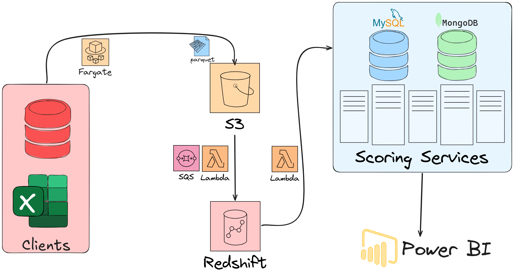
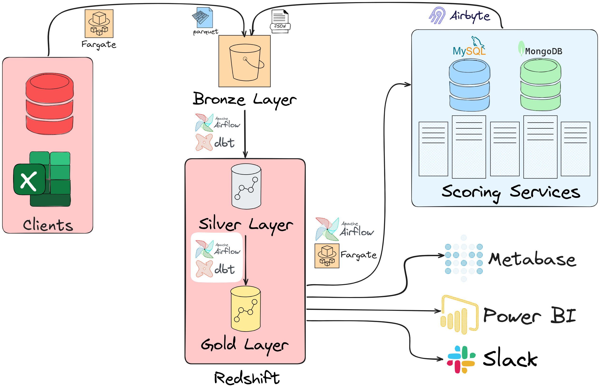

(S)ituation: In 2024 at Seedz, a data-driven agritech platform, faced recurring data issues such as missing submissions, incorrect scoring, and degraded service performance. These challenges affected key components of the loyalty program, which had already enabled BRL 10+ billion in transactions.
(T)ask: I led a Data Quality initiative to develop a solution to identify data issues and provide real-time alerts to stakeholders. The goal was to enhance data integrity and operational efficiency.
(A)ction: We developed a two-phase strategy. In Phase 1, we built modular microservices to continuously validate data flow across the pipeline, from ingestion to consumption. These services generated alerts for any detected issues. In Phase 2, we designed interactive dashboards to visualize data integrity trends and enable real-time monitoring.
(R)esult: We successfully automated a wide range of recurring analyses, reducing investigation times from days to seconds. This significantly improved operational agility and confidence in our data ecosystem. The second phase is currently underway, focusing on stakeholder interviews to refine dashboard designs and reporting tools.
As a Data Engineer at Seedz (2024), I led a Data Quality initiative, responsible for ensuring the accuracy, consistency, and integrity of data across our entire pipeline. Seedz is committed to transforming the agribusiness ecosystem through solutions such as a loyalty platform to leverage sales campaigns by offering rewards to sellers and cashback to customers. Operating in 10 countries, the platform has supported financial transactions exceeding BRL 10 billion.
Like many fast-growing companies, Data teams frequently received recurring data quality issues reported by Client Managers and stakeholders, which often resulted in repeated analysis requests and operational interruptions. To address this, I mapped and categorized the most common types of issues:
Each issue could have multiple root causes, often unique and non-repetitive. It became clear that without a structured detection and monitoring mechanism, these problems would persist. After mapping the data pipeline and analyzing historical incident reports, I identified that most issues originated from three critical stages: data ingestion, data movement across databases, and scoring logic.
However, due to legacy constraints, several platform services continued to rely on isolated operational databases (e.g., MySQL and MongoDB), while Power BI dashboards queried these OLTP databases directly instead of consuming curated datasets from the data warehouse. Additionally, the ingestion and transformation pipeline was implemented as an event-driven architecture using AWS Lambda and Amazon SQS, where data ingestion, processing, and delivery were coordinated through asynchronous events. Although this serverless architecture provided scalability, loose coupling, and operational flexibility, it also fragmented the processing logic across numerous Lambda functions and SQS queues. As the system evolved, end-to-end observability became increasingly difficult, making it challenging to trace data lineage, diagnose failures, and identify the root cause of data quality issues across the pipeline.

Figure 1: Illustration of the old data pipeline architecture.To address these challenges, I worked with my team to design and implement a three-phase action plan to modernize the data platform, improve observability, and automate data quality validation.
We migrated from a serverless event-driven architecture based on AWS Lambda to a batch-oriented architecture orchestrated by Apache Airflow, using dbt for data transformation. This change centralized the data processing workflow, simplified orchestration, and significantly improved observability and maintainability.
We also redesigned the data architecture following the Medallion pattern on Amazon Redshift:
In addition, we migrated scoring data that previously resided in isolated services into the data warehouse, making it directly accessible through Power BI and establishing a single source of truth for business reporting.
The second phase focused on implementing continuous monitoring, automated data validation, and metadata management across the entire data lifecycle, from ingestion to data delivery. We developed automated validation services that executed periodically and generated alerts whenever anomalies or data quality issues were detected.
Monitoring was organized into four domains:
Most validations were implemented using dbt tests, Elementary, and Great Expectations, leveraging the data warehouse as the central validation layer. In parallel, we introduced a centralized data catalog using dbt Catalog, enabling teams to discover datasets, understand lineage and model dependencies, and access technical and business documentation through a single source of truth.
For scenarios that required validations beyond the warehouse, we developed Python microservices capable of:
To make the monitoring actionable, we designed operational dashboards in Metabase and implemented automated reports delivered through Slack channels. These dashboards enabled engineering, operations, and business teams to monitor system health in real time, investigate data quality trends, and generate detailed reports on demand.
The solution followed a three-tier architecture composed of Data, Business Logic, and Presentation layers, ensuring clear separation of responsibilities, scalability, and maintainability. All microservices were developed in Python, containerized with Docker, and deployed on AWS.

Figure 2: Illustration of the new data pipeline architecture.
The initiative fundamentally changed how Seedz managed data quality. Investigations that previously required days of manual analysis could now be completed in seconds through automated detection and diagnostics. Engineering teams became proactive instead of reactive, significantly increasing confidence in the company's data ecosystem while reducing operational workload.
The migration from an event-driven architecture to a batch-oriented platform also reduced AWS infrastructure costs by more than 40%, while improving reliability, simplifying maintenance, and providing a much more robust foundation for future growth.